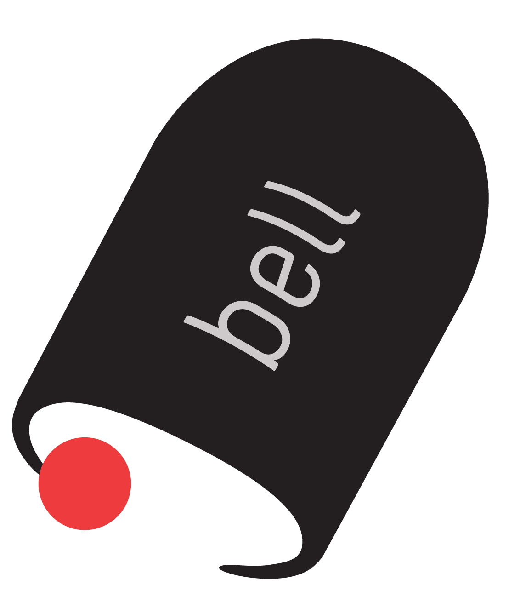

By Scott Numamoto
About
Bell quickly tells how many minutes of class are left. Whether at zero, break, or the last class of the day, Bell calculates the time remaining. This is currently the fourth major version of Bell, revamped for the 2014-2015 school year. Bell first launched back in 2013. Find Bell for Android on the Google Play Store.
Special Thanks
Bell logo
was designed by Kelly Numamoto. Photos taken and edited by
Michael Lin. Lastly, special thanks to everyone who has
used and shared!